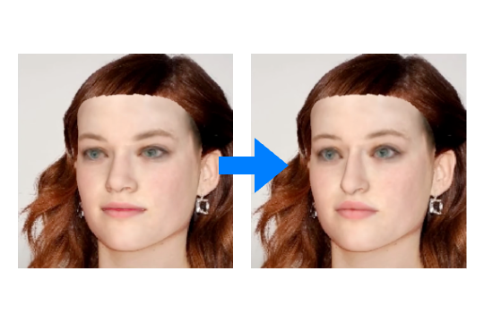

Research and Projects
📠Google Scholar Homepage
ArchitectHead
WACV 2026 (Accepted)
Continuous level-of-details (LOD) control for 3DGS head avatars.
Peizhi Yan, Rabab Ward, Qiang Tang, Shan Du
Neural 3D Face Stylization
2025 TVCG
A neural network-based mesh deformation transfer method for learning 3D face stylization in a weakly supervised manner.
Peizhi Yan, Rabab Ward, Qiang Tang, Shan Du
Gaussian Deja-vu
WACV 2025 Oral
A novel 3DGS-based head avatar creation method that accelerates training for personalized avatars and enhances their photorealistic quality.
Peizhi Yan, Rabab Ward, Qiang Tang, Shan Du
StyleMorpheus
2025 Neurocomputing
A style-based neural morphable face model trained on in-the-wild images, enabling photorealistic 3D face synthesis and editing.
Peizhi Yan, Rabab Ward, Dan Wang, Qiang Tang, Shan Du
HeadNeRF+
ICIP 2023
A 3D-aware face reconstruction learning framework tailored for HeadNeRF.
Peizhi Yan, Rabab Ward, Dan Wang, Qiang Tang, Shan Du

NEO-3DF
ACCV 2022
Novel-Editing-Oriented 3D Face Reconstruction from Single-Image
Peizhi Yan, James Gregson, Qiang Tang, Rabab Ward, Zhan Xu, Shan Du
Light-Field Refocusing GUI Demo
2021
ZenFlow
2021
Numpy-based demo of feed-forward networks and backpropagation. Implemented for education purpose.
Algorithm Zoo
Ongoing since 2020
🻠ğŸ 🮠🰠🱠🯠🰠🶠🼠ğŸ˜
Whiteboard
2020
Based on HTML, CSS, Javascript, and Paper.js, a static website of a whiteboard.
Video 4X Super-Resolution
2019
Deep learning-based method to upscale a low-res video to 4X.